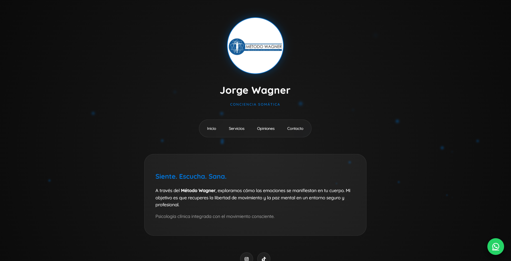
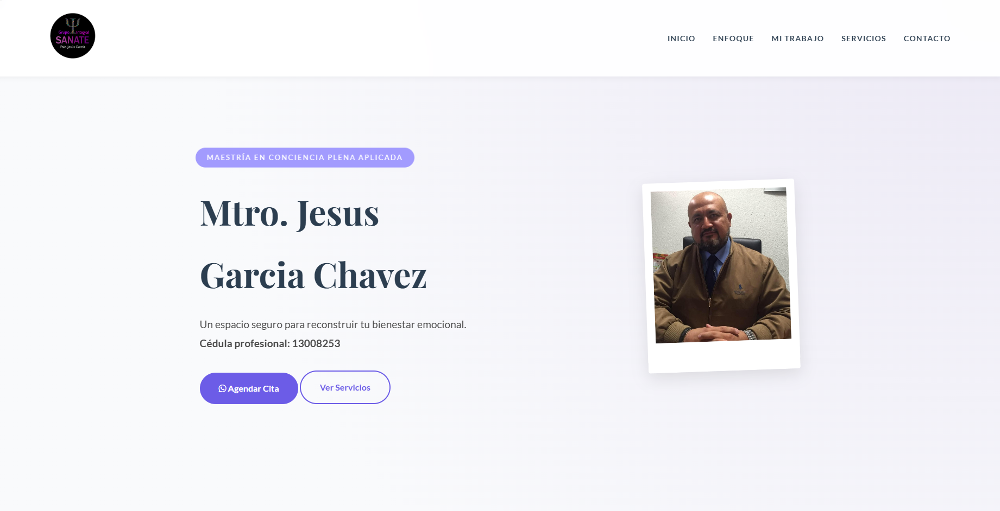
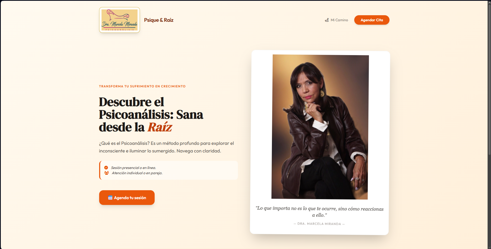

Desarrollo web, presencia digital y producto
Founder-led digital studio
15+
sitios web desarrollados
websites built
25
negocios gestionados en Google
businesses managed on Google
50k+
audiencia en TikTok
TikTok audience
Desarrollo web claro, presencia digital y productos con visión de laboratorio. Building digital systems, online presence and products with a lab-driven vision.
NeuroDev Studios crea sitios web, presencia digital y productos propios para psicólogos, negocios y profesionales que necesitan verse bien y crecer con una base sólida. NeuroDev Studios is a digital studio focused on web development, online presence, SaaS products and technology experiments born from real-world testing.
Qué construye el estudio
NeuroDev Studios no gira alrededor de una sola habilidad. Combina ejecución práctica, productos propios y experimentación tecnológica.
💻
Desarrollo web
Micro-sitios y páginas profesionales para psicólogos, negocios, profesionales e instituciones.
📦
Productos
SaaS y herramientas digitales en construcción a partir de problemas reales detectados en campo.
🧪
Labs
Pruebas técnicas, sistemas multi-seat, optimización de Minecraft y conceptos como Thiago.
Proyectos reales
Una muestra rápida de trabajos desarrollados para clientes reales.

Psicología
Jorge Wagner
Sitio profesional con enfoque moderno y presencia clara para consulta psicológica.

Psicología
Jesús García Chávez
Página con estilo institucional, clara y enfocada en información profesional.

Psicología
Marcela Miranda
Sitio con tono más cálido y cercano, ideal para generar confianza en pacientes.
Productos y visión
La meta del estudio no es quedarse solo en servicios. Es convertir experiencia real en propiedad propia.
🧠
Psychometric Platform
Sistema para pruebas psicométricas enfocado en psicólogos y procesos digitales más profesionales.
📊
HR Evaluation Platform
Plataforma para recursos humanos con enfoque en evaluación, flujo y estructura de reclutamiento.
🚀
NeuroDev Studios
Servicios que hoy financian la construcción de software y sistemas más grandes para mañana.
Dentro del laboratorio
La parte que le da personalidad al estudio: pruebas reales, gaming como laboratorio y sistemas raros con potencial real.
1 PC → múltiples estaciones
Implementaciones multi-seat con validación real, ahorro de costos y visión hacia un software propio.
Minecraft como laboratorio técnico
Pruebas de rendimiento con APUs AMD, RX 580, mods, shaders y doble instancia.
Thiago
Exploración de un asistente más humano, útil y presente dentro de una visión de largo plazo.
¿Qué sigue?
Si necesitas una web, presencia digital o quieres construir algo más serio, aquí hay base para hacerlo bien.
Base actual
- Webs para psicólogos y profesionales
- Google Business y visibilidad local
- Community management y contenido
- Productos SaaS en desarrollo
- Laboratorio técnico activo